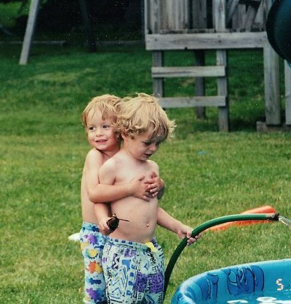

The Fall Guy
I will save you some time and energy and cut straight to the point. I did everything I could to frame my brother. I sold the company alongside my brother for $250,000 the following year and fabricated clients ranging from the Mom and Pop shop down the street to over 10 Fortune 500 companies. We looked like an intriguing purchase to an investor, but once they called on these fabricated clients that had no recollection of who we or the company was, the castle came tumbling down. Luckily, it did not tumble on me though. I had completely fabricated the sale of the business to my brother, so according to our lawyer and all of the legal records, he was the sole owner, he was the guilty one. As for me, I was as innocent as ever. I played my cards right and I acted oblivious to the whole endeavor. I casted blame and shame on my brother every step of the way and the craziest thing was, all of the authorities believed me. You know what they called me? An authentic and honest man.
New Beginnings
As a matter of fact, it was my honesty and integrity that I claimed on my application to Harvard that got me into the school in the first place. I told a sad tale of a brother who tried to do the right thing every step of the way, but was consistently pulled down by his brother. What the applicant screeners did not realize was that my story was the total opposite of what actually happened. Anyway, when I got onto the Harvard campus I prospered. Classes were competitive, but I have always been a smart guy, so I got As in every single one. However, what was even more competitive than classes was the social landscape. Every person on campus seemed to know someone in power. I did everything I could to influence or if need be manipulate the right people to get in front of the right faces and make a good impression. After all, I have always been an authentic and honest man. I even wiggled my way into Harvards most famous Finals Club, The Porcellain Club. Rumor has it that if you do not make your first million coming out of the Porcellain Club by the time you are 40, then they will give it to you. After meeting tons of new contacts throughout college, I was nearing graduation. I wanted a job though and I wanted a damn good one. So after networking my way to the VP of Finance of Goldman Sachs, I had a long list of strong contacts. When I got face with the man behind the show named Tom Barajaw, I gave him every reason in the book to give me a job. I was not begging for one, but I told him that I would make him twice as much money if he merely gave me an opportunity. Tom ended up giving me an opportunity to work alongside him and on the first day I showed up an hour earlier than him just to prepare for the job. I worked one year under him doing everything he told me to. I would create financial models when he asked for them, I would prepare documents for his meetings, and I would even listen to his voicemail and take down all of the daily messages. Tom thanked me for all of this because it allowed him to focus his time on adding more value and ultimately making more money. Tom gave me a lot of responsibility, but I never disappointed him. At least I had not disappointed him yet. After a year had passed, I was getting eager to get a bigger glimpse of the action. However, to the CEO it looked like Tom was functioning at an unprecedented rate. I thought a lot about it and then I decided the only way I could make it up to the next rung of the ladder would be to drop the ball on some of Toms most important tasks that he thought he was regularly receiving from me. So when the Secretary of Treasury called and left a detailed voicemail about the potential bailout of the Lehmann Brothers in 2008, I conveniently took down the notes of the voicemail, put the sheet in my pocket, and erased the message. It was less than a month later that we released our financial reports that showed a massive loss in the mortgage department. One that could have prevented had we acted on the opportunity of the bailout and one that significantly hindered the U.S. economy for years to come. This time when the Secretary of Treasury called Goldman Sachs, he called the CEO. I was told that he was furious about how Tom never called him back and how a lot of the damage could have been prevented had Tom communicated with him. The CEO spoke with Tom about the issue and said that the losses were so large that he could not justify keeping Tom in his current role, meaning that Tom was fired. Tom tried to cast blame on me, but the CEO simply would not listen because he could not understand why the VP of Finance would give a 30 year old such a big responsibility. However, when it came time to find a replacement they decided to give me an interview for the position and of course I showed up with my honest and authentic personality to woo them away. Here's some videos of me when I was younger. I loved FIFA back in the day.